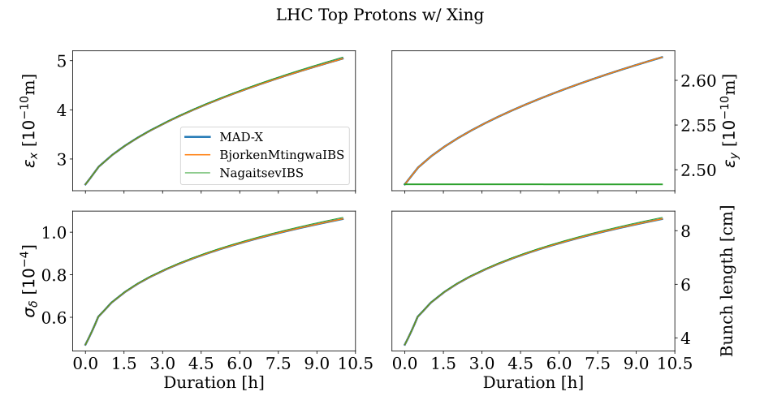

Gallery
This page contains a gallery of examples showcasing functionality provided by xibs.
Click on any image thumbnail to see the corresponding example page with and access to the source code.

Bjorken-Mtingwa Formalism - Analytical Growth Rates and Emittance Evolution
Bjorken-Mtingwa Formalism - Analytical Growth Rates and Emittance Evolution

Comparison of Analytical IBS Growth Rates and Emittances Evolution
Comparison of Analytical IBS Growth Rates and Emittances Evolution

Nagaitsev Formalism - Analytical Growth Rates and Emittance Evolution
Nagaitsev Formalism - Analytical Growth Rates and Emittance Evolution

Simple Kicks Formalism - IBS Kicks Based on Analytical Growth Rates
Simple Kicks Formalism - IBS Kicks Based on Analytical Growth Rates